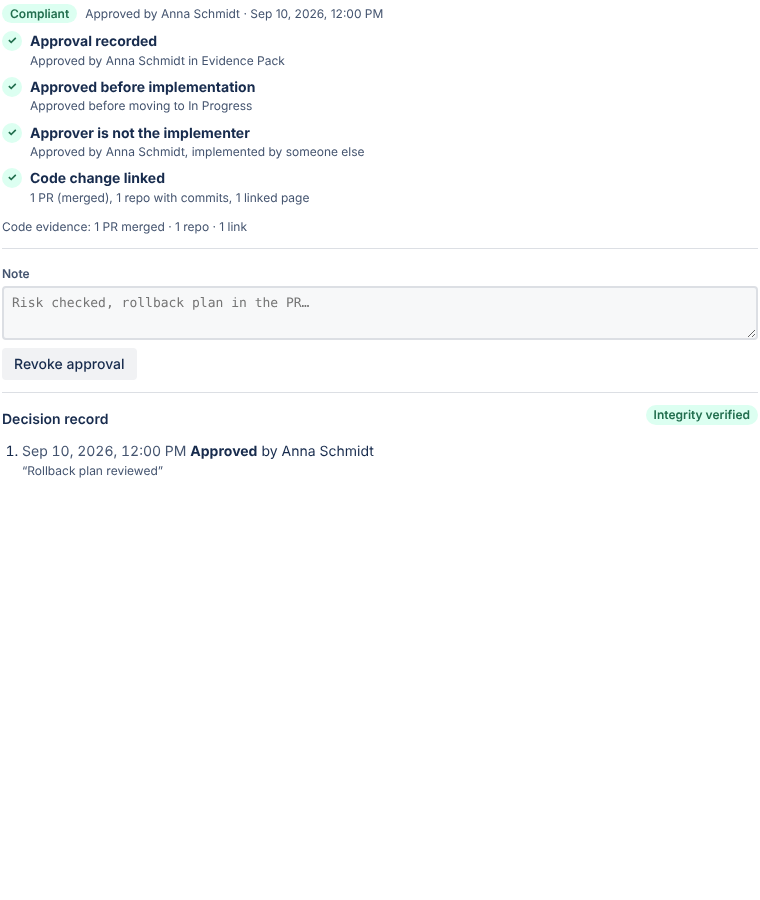

Approving changes in the ticket
Approvers can approve or reject a change directly on the Jira issue, so the decision is recorded where the work happens.
Open the panel
On any issue, click the Evidence Pack icon below the title and choose Change approval. The panel shows whether the change is compliant, waiting for approval, or has an exception, and why.

Approve, reject or revoke
- Approve change records your approval with an optional note. If your admin turned it on, the issue also moves to the approval status.
- Reject needs a short reason.
- Revoke approval appears after an approval and records a rejection, which cancels the approval.
Every decision also adds a comment to the issue, so the team sees it.
Who can approve
By default anyone who can see the issue can approve, except its assignee. Admins can limit approval to Jira groups such as a change advisory board in Settings.
The decision record
The panel lists every decision on the issue. Integrity verified means each decision still matches the chain of SHA-256 hashes created when it was recorded.